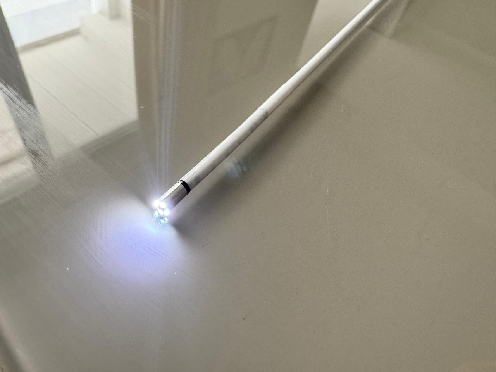
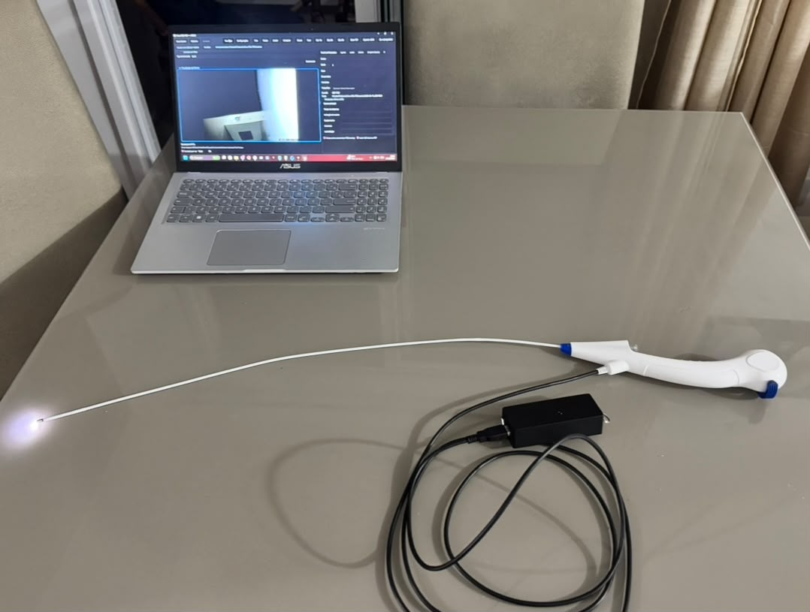
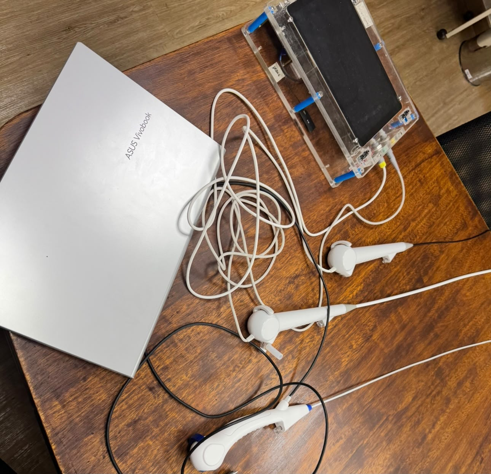

Manutenção e indisponibilidade
Em arquiteturas fechadas, a falha de um componente pode comprometer o conjunto e afetar a agenda de atendimento.
Uma base universal. Sondas por especialidade. Software clínico integrado.
Uma plataforma modular de endoscopia pensada para hospitais e clínicas que precisam atender diferentes especialidades sem repetir toda a infraestrutura a cada nova aplicação.

O Nexus V separa o que pode ser comum do que precisa ser específico. A Base Universal concentra eletrônica, energia, conectividade e funções de controle. As sondas e handpieces são selecionados conforme a especialidade. O Visus completa a operação com visualização, captura, histórico e documentação clínica.
A clínica pode iniciar a implantação com uma ou duas áreas âncora e ampliar a cobertura adicionando sondas compatíveis à mesma infraestrutura. A proposta reduz duplicações, simplifica a evolução tecnológica e cria uma base comum para a operação digital.
Plataformas dedicadas por aplicação multiplicam infraestrutura, peças, treinamentos e integrações dentro da mesma instituição.
Em arquiteturas fechadas, a falha de um componente pode comprometer o conjunto e afetar a agenda de atendimento.
Cada aplicação pode exigir configuração, peças e treinamento próprios, aumentando complexidade operacional e custo total.
Atualizações, conectividade, dados e laudos tendem a evoluir lentamente quando dependem de plataformas proprietárias isoladas.
A configuração e os componentes ainda podem evoluir ao longo da engenharia, dos ensaios e do processo regulatório.
Concentra eletrônica, energia, comunicação por Wi-Fi e funções de controle que podem ser reutilizadas entre aplicações.
Sondas e handpieces dedicados adaptam captura, formato e operação às necessidades de cada área clínica.
O Visus conecta visualização, imagens, vídeos, laudos e histórico, enquanto suporte e evolução acompanham a operação.


Uma mesma base atende a expansão por especialidade, reduzindo a necessidade de repetir toda a plataforma.
A instituição começa com áreas âncora e adiciona novas sondas conforme demanda, orçamento e estratégia.
Uma arquitetura comum favorece treinamento, manutenção, reposição e gestão técnica do parque.
Software, documentação e suporte criam uma camada comum entre especialidades e acompanham a evolução do sistema.
A estrutura comercial acompanha a arquitetura modular. A instituição adquire a base e a primeira sonda, amplia por especialidade e mantém a camada digital e o suporte ao longo da operação.
O núcleo de eletrônica, energia, conectividade e controle inicia a infraestrutura instalada.
Cada nova aplicação expande o sistema sem exigir a repetição completa da base.
Licenciamento e evolução do fluxo clínico, laudos, histórico e recursos digitais.
Contratos de suporte, atualizações e serviços associados à continuidade operacional.
O sistema está no nível de prova de conceito experimental, com subsistemas críticos avaliados em bancada. O próximo objetivo é integrar a Base Universal e uma sonda em um protótipo de laboratório.
Leitura do fluxo de exames, limitações de integração, manutenção e oportunidades de modularização.
Definição das camadas de captura, eletrônica, processamento e software clínico.
Placa da base, firmware, Wi-Fi, óptica e iluminação avaliados como subsistemas experimentais.
Seleção para o programa não residente da Intec/Tecpar, com conexão a orientação e infraestrutura especializada.
Protótipo integrador, validação em laboratório, ambiente relevante, pilotos controlados e pacote progressivo de evidências.

A proposta do Nexus V foi selecionada na modalidade não residente do programa de incubação do Instituto de Tecnologia do Paraná. O ambiente conecta o projeto a orientação técnica, infraestrutura e serviços especializados para apoiar prototipagem, ensaios e planejamento tecnológico.
Ler publicação oficial do Tecpar ↗Conheça a camada de software desenvolvida para conduzir o exame, organizar imagens e vídeos, manter o histórico e apoiar a produção da documentação clínica.
Conhecer o Visus Medical Suite ↗O enquadramento regulatório depende da finalidade de uso. A classificação de risco, a gestão de riscos, o dossiê técnico, os requisitos de segurança e desempenho e o plano de ensaios integram a evolução do projeto. As imagens apresentam configurações experimentais; incubação não representa certificação, registro ou aprovação sanitária.